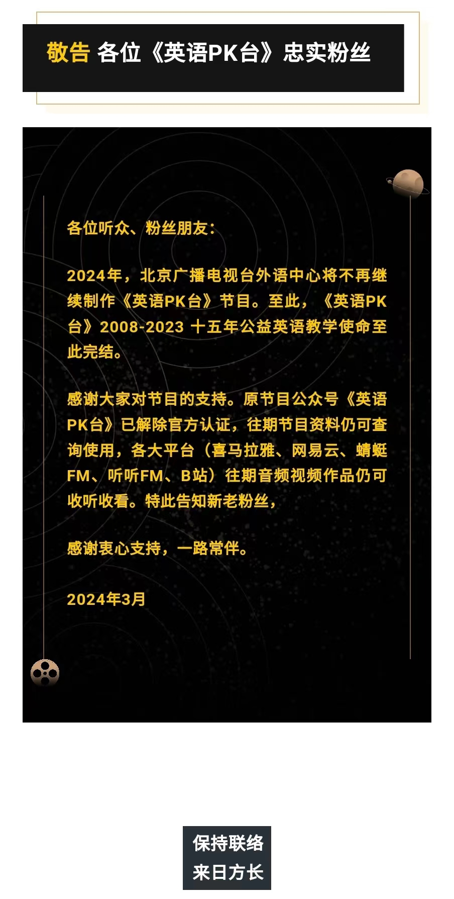

2024-04-17 再见英语PK台
目录
一个月没有收听英语PK台了，今天晚上打开发现微信读书的公众号订阅，发现英语PK台发了一封告别信。原来在上个月，这个广播节目已经和大家告别了。
英语PK台从我知道的那天起，一直是我学习英语的主要来源。因为它足够靠谱，足够用心，足够成为我的唯一的选择。
它有很多精彩的节目——音标、单词、地道美语、精读、高翻，还有我最喜欢的《老友记》和《摩登家庭》系列。
我永远记得每一集京晶老师的开场白——“英语PK台，一起学起来，观众朋友们，大家（下午/晚上）好。” 这个开场白一来，我就知道精彩的内容又开始了。
英语PK台的教学氛围一直是愉快的，这主要依靠京晶老师的主持功力。她声音好听，善解人意，很会把握节奏，和各种搭档都配合地很好。听着节目的时候，我很多次都会在心里惊叹京晶老师为什么这么会接话。记得《和老友记一起学美语》开课时，Henry老师刚从国外来，会说中文但是不会用成语，也不懂流行用语，京晶老师提示和解围了好多次。几年过去了，《和老友记一起学美语》出到第三本书，不知道大家的英文学得怎么样，我去年又听到Henry老师的课，发现他的中文说得很溜了。
京晶老师和她的搭档呈现的恰到好处的熟稔，这一点在我工作之后，才意识同事之间这样的氛围可遇不可求。
谢谢北京广播电视台曾经把英语教育看成是重要的任务并且坚持至今——15年过去了，无数的听众因此受益。现在的国际大环境和国内环境都非常复杂，国与国之间、文化与文化之间、观念与观念之间的冲突越来越大，守护本心的人越来越少。我们能做的，就是不要被媒体蒙蔽双眼，多出去走走，多沟通多交流。
希望各位老师都有灿烂的未来，作为你们的听众中的一员，我会继续学习英文，多用英文输入和输出，谢谢你们这么多年的陪伴。
